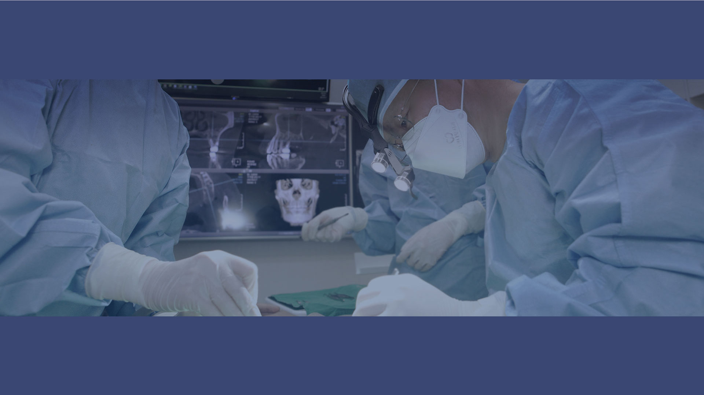
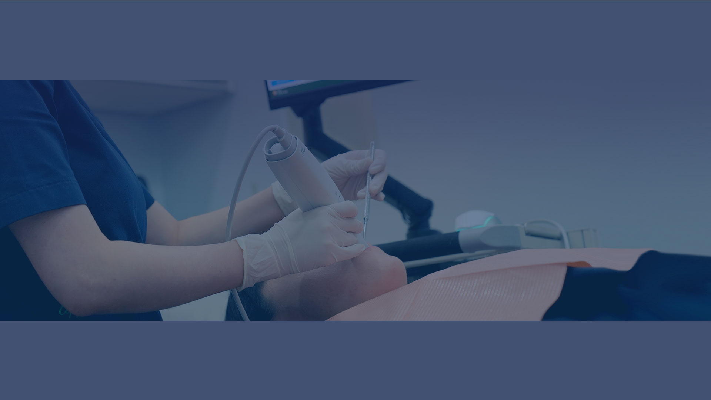
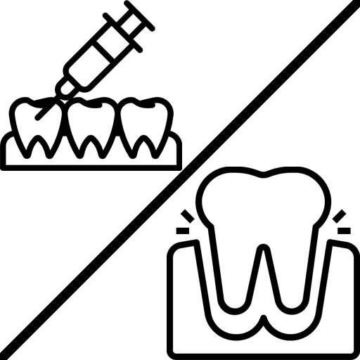
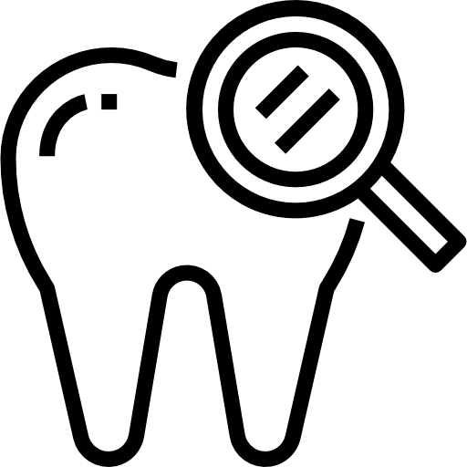

사과나무
사과나무의 특별함
의료진 소개
오시는 길
치료서비스
임플란트
치아교정
예방관리
구강외과/내과
일반진료
구강건강연구소
연구소 소개
커뮤니티
사과나무 소식
온라인 상담
사과나무 유튜브
사과나무 이벤트
대한민국 국민들의 건강한 구강과 삶의 질 향상을 위한
사과나무
사과나무의 특별함
의료진 소개
오시는 길
소중한 치아를 위한 꼭 필요한 치료만을 정확하게 시행하는
치료서비스
임플란트
치아교정
예방관리
구강외과/내과
일반진료
건강한 라이프 스타일을 위한 예방 차원에서의 구강 건강 전반에 걸친 새로운 패러다임을 만드는
구강연구소
연구소 소개
정성을 다하는 우리의 열정이 뿌리깊은 믿음이 되었습니다.
커뮤니티
사과나무 소식
온라인 상담
사과나무 유튜브
사과나무 이벤트


임플란트
DENTURE IMPLANT
사과나무치과병원 의료진은 새로운 의료기술 습득을 위한 끊임없는 연구활동과 축적된 임상 노하우를 바탕으로 다양한 케이스의 임플란트를 시행합니다.
치아교정
ORTHODONTICS
서울대 출신의 보건복지부 인증 교정과 전문의가 3차원 정밀 진단과 분석을 통해 개인 맞춤 교정을 제안해드립니다.
예방관리
PREVENTIVE CARE
치아는 한번 손상되면 본래의 상태로 돌아갈 수 없기 때문에 자연치아를 소중히 생각하고 미리 예방해야 합니다.

구강외과/내과
STOMATOLOGY
사과나무치과병원은 구강외과, 구강내과 전문의가 상주해 있어 입과 얼굴, 그리고 턱에서 발생하는 여러 구강 질병의 치료가 가능합니다.

일반진료
DENTAL CARE
사과나무치과병원의 진심은 치료 결과의 차이를 만듭니다. 소중한 치아를 위한 꼭 필요한 치료만을 정확하게 시행합니다.